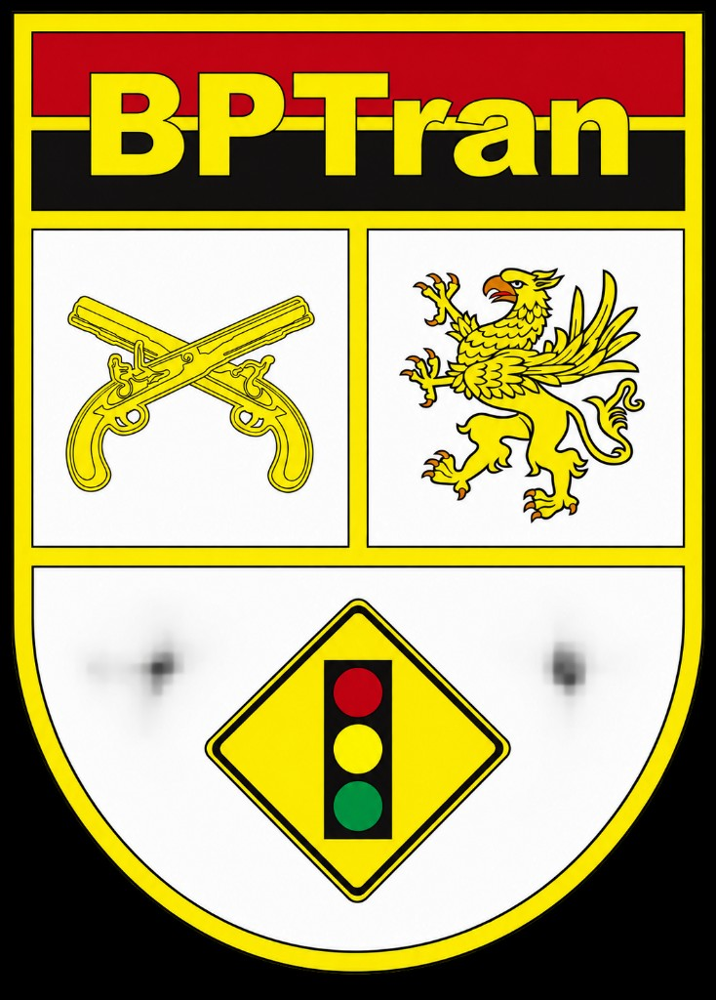

Boletim de Ocorrência
Preenchimento do BO online. Quando aberto a partir do RSD, o número e o resumo da ocorrência retornam automaticamente ao serviço.


Polícia Militar da Paraíba • BPTran • BPRv
Acesso aos formulários operacionais dos Batalhões Especializados de Trânsito Urbano e Policiamento Rodoviário
Preenchimento do BO online. Quando aberto a partir do RSD, o número e o resumo da ocorrência retornam automaticamente ao serviço.
Relatório de Serviço Diário
Abertura, continuidade e documentos vinculados ao serviço.
Relatório do Coordenador
Consolidação e acompanhamento da coordenação operacional.
Inspeção da viatura
Conferência por tipo de veículo e envio à Motomecanização.
Reboque e transporte ao DETRAN
Relatório de traslados e CIRVC — fluxo de remoção.
Usar somente se a Central estiver indisponível.
Resoluções internas, POPs, PAPs, normativas e orientações ao efetivo.
Acessar documentosAplicativos de apoio à atuação operacional.